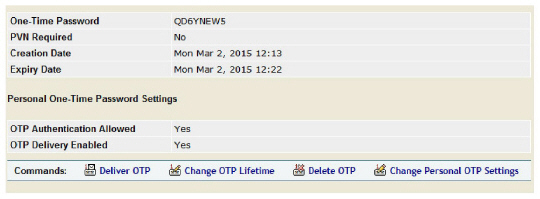
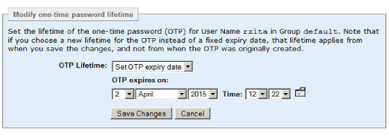

|
IdentityGuard Server 13.0 Administration Guide |
|
IdentityGuard Server 13.0 Administration Guide |
You can change the OTP lifetime for a user’s out-of-band OTPs from the user account. If the user has more than one OTP, the expiry dates for all of the OTPs are changed.
To change the OTP expiry date
1. Log in to the Administration interface (see Logging in and out of the Administration interface).
2. Click User Accounts on the main menu.
3. Find a specific user (see Searching for users with an out-of-band one-time password ).
4. On the Account Information pane, click One-time Password to see the OTP details.

5. Click Change OTP Lifetime.
The Modify one-time password lifetime screen appears.

6. In OTP Lifetime, select from the following options:
● Set OTP Lifetime — Choose a new lifetime for the OTPs. The new lifetime begins when you save these changes.
● Set OTP expiry date — Use the date selector to select a new expiry date for the OTPs.
● OTP never expires — Use this option if you want to remove the expiry date.
7. Click Save Changes.
The expiry date of the OTPs is changed.